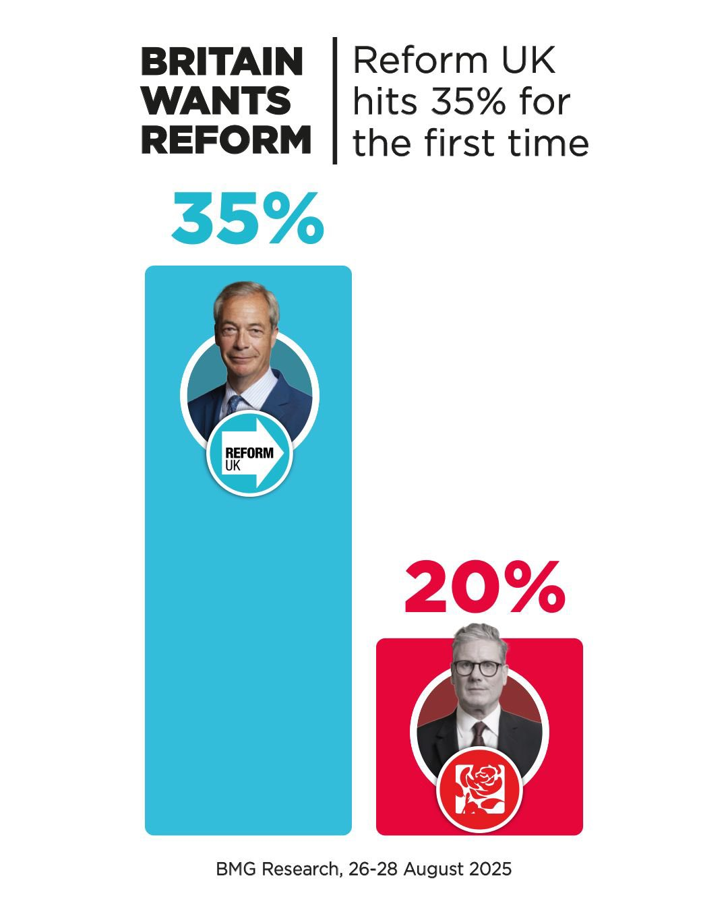

Coding Challenges
CC1. Hosting: display charts in my own site
CC1 chart 1
CC1 chart 2
CC2. Building: my own visualisations
CC2 chart 1
CC2 chart 2
CC3. Policy debate
Amid spiking prices, Germany's natural gas storage is historically low. Economics minister Katerina Reiche previously opposed calls for state intervention, pointing to free market mechanisms.
CC3 chart 1
CC3 chart 2
Solely entrusting the market with national gas security has backfired. Reiche's proposed emergency law to hold gas suppliers more accountable is a step into the right direction.
CC4. Replication: re-create, then improve, someone else's chart
Original

Replication
CC4 replication
Reform UK shows the polling results disproportionally. I fixed this and decided to plot the bar chart horizontally. Moreover, I decided to include "Others":
Improvement
CC4 improved version
CC5. Accessing data: (1) API, (2) Scraper
API
CC5 API chart
Scraper
CC5 scraper chart
CC6. Loops: UK devolution dashboard
CC7. Maps: base maps and choropleths
Coordinates map
CC7 coordinates map
Choropleth
CC7 choropleth